Examples
Every example is one .es3d text file. Click a picture to open the scene in ES3D Studio, where you can change the source and see the result immediately. Or click the file name and read the source in the browser.
The pictures are screenshots of the reference renderer (WebGL2).
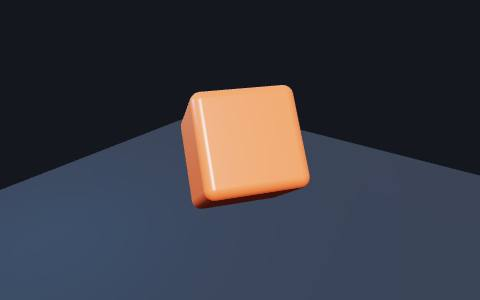 |
1. Rotating cube One rounded box, one animation. 775 bytes ES3D file · 453 bytes gzipped File: 01-rotating-cube.es3d |
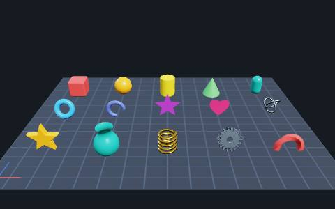 |
2. Primitive test scene Every geometry type of ES3D v1. 4.1 kB ES3D file · 1.5 kB gzipped File: 02-primitives.es3d |
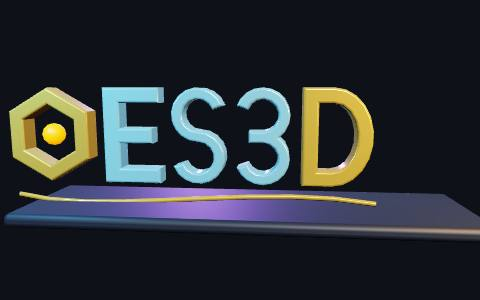 |
3. Extruded SVG-style logo Path data extruded with a bevel. 2.7 kB ES3D file · 1.1 kB gzipped File: 03-logo.es3d |
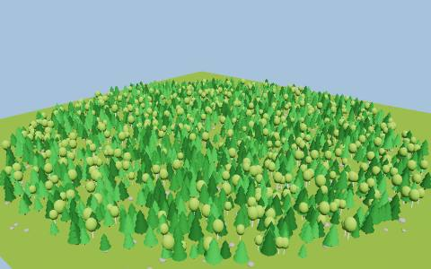 |
4. Forest (instancing) 2,400 objects from two definitions and three scatters. 2.2 kB ES3D file · 886 bytes gzipped File: 04-forest.es3d |
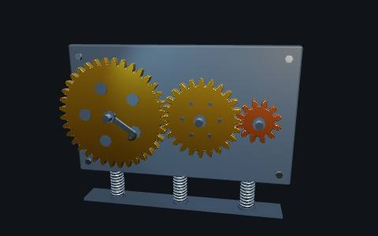 |
5. Gearbox (procedural) Involute gears, springs, repeats and animation. 3.7 kB ES3D file · 1.3 kB gzipped File: 05-gearbox.es3d |
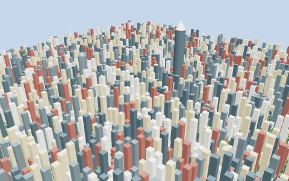 |
6. City (7,300 objects) Grid scatters with random heights and materials. 2.3 kB ES3D file · 1,009 bytes gzipped File: 06-city.es3d |
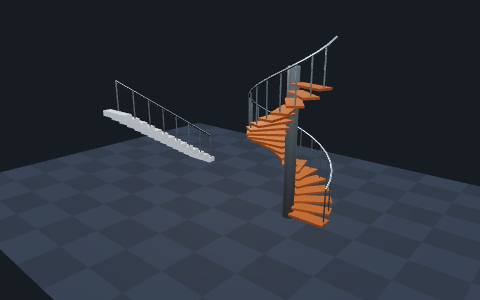 |
7. Parametric staircases Straight and spiral flights from one step each. 2.1 kB ES3D file · 938 bytes gzipped File: 07-staircases.es3d |
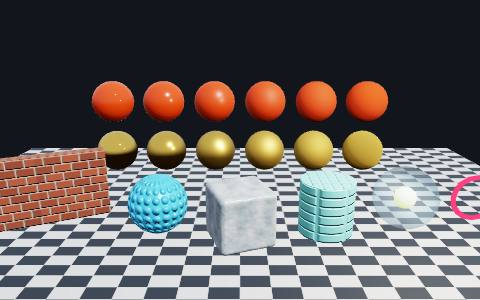 |
8. Materials and textures Metallic/roughness grid, procedural textures, normal maps. 3.5 kB ES3D file · 1.1 kB gzipped File: 08-materials.es3d |
| 9. Compact syntax A desk scene written in ES3D-C. 2.7 kB ES3D file · 1.3 kB gzipped File: 09-compact-syntax.es3d |
|
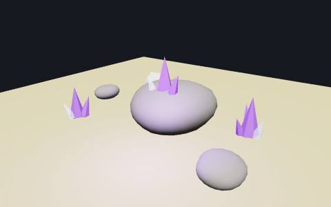 |
10. Mesh escape hatch Explicit triangle meshes as reusable definitions. 8.8 kB ES3D file · 3.3 kB gzipped File: 10-mesh-escape-hatch.es3d |
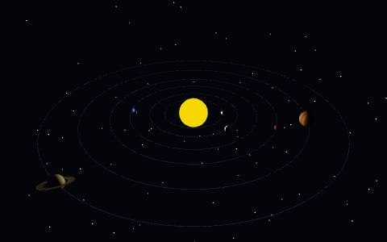 |
11. Solar system Nested animated transforms and a starfield. 3.4 kB ES3D file · 1.1 kB gzipped File: 11-solar-system.es3d |
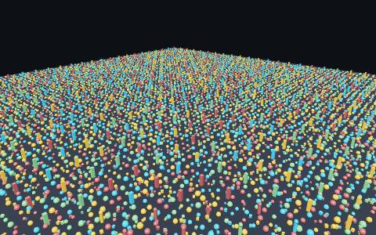 |
12. LOD stress test (20,000) Automatic and authored levels of detail. 2.0 kB ES3D file · 877 bytes gzipped File: 12-lod-stress.es3d |
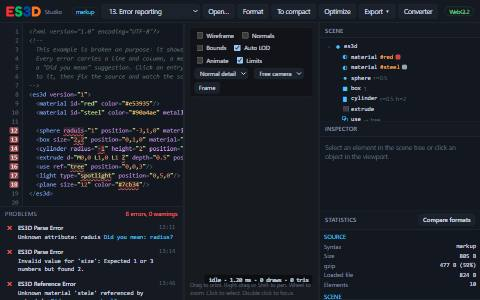 |
13. Error reporting A broken document showing diagnostics. 805 bytes ES3D file · 477 bytes gzipped File: 13-error-demo.es3d |
Four small websites use the same library: a medieval village, a gift box, a bicycle and a lamp room. They are the Demo Sites.
Want to make your own? Start from one of these in ES3D Studio, or convert an SVG drawing and edit the result.